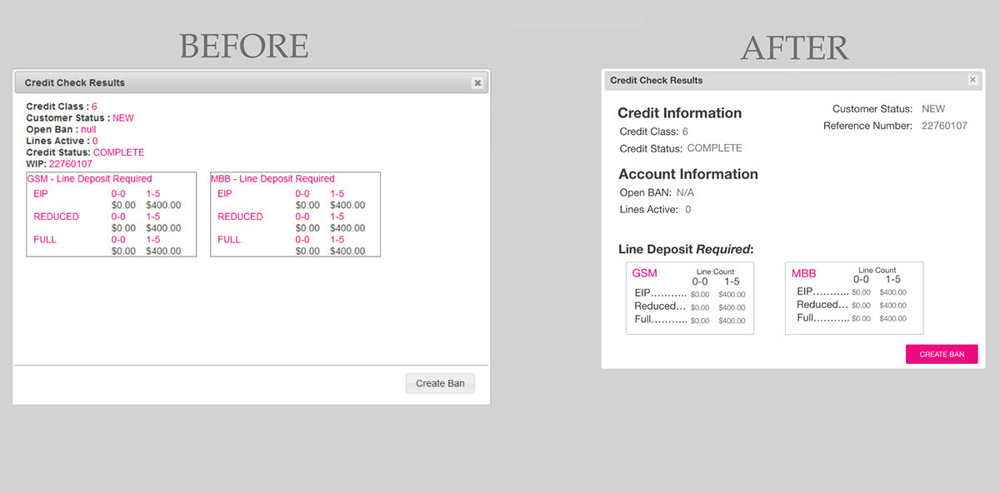

UX Prototypes
All prototypes have been created using Adobe Experience Design. You may click on each prototype and interact with it within this page. Contact me, if you'd like to learn more about my designs.
Reporting Application to generate reports of data. Before this application there was no place to generate all possible reports. Instead it was scattered throughout the products.
(top) the original page for User Management. (bottom) My redesigned version of User Management with notes for implementation. This was still a work in progress at the time and depicts the way I'd present my designs to team member to ensure it was possible to implement and present as a possibility to the customer.
A credit check dialogue box redesigned. I reorganized the information and made use of the white space, to visually space out the information and improve the readability of what is presented.
